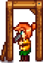

Vorlage:Executable name
|  |
Unvollständige Übersetzung Dieser Artikel oder Abschnitt wurde noch nicht vollständig ins Deutsche übersetzt.
Du bist herzlich eingeladen, uns dabei durch die Bearbeitung dieses Textes zu unterstützen! |
Details zur Vorlage finden Sie auf der englischsprachigen Dokumentationsseite.
Verwendung
Diese Vorlage kann verwendet werden, indem Sie auf eine relevante Seite folgendes eingeben.
{{Executable name}}
Ergibt...
{{{1}}}.exe